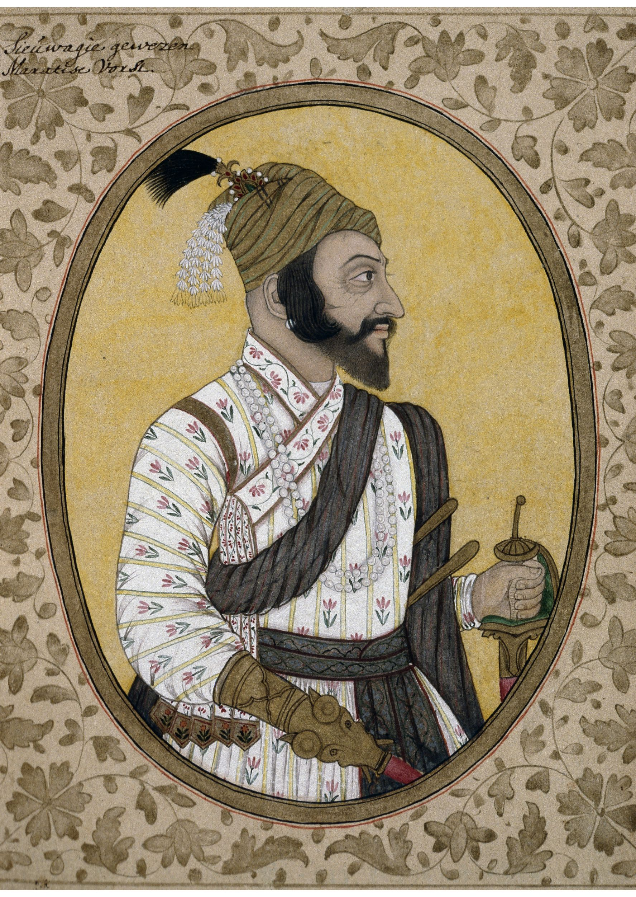
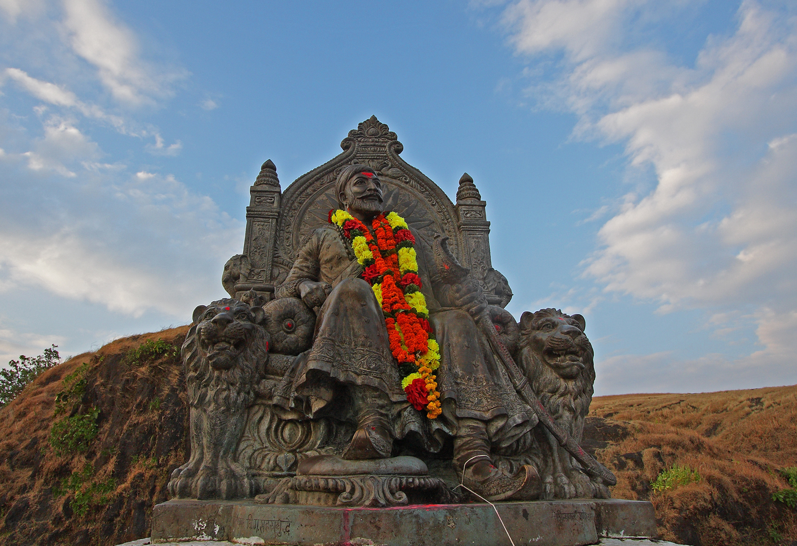
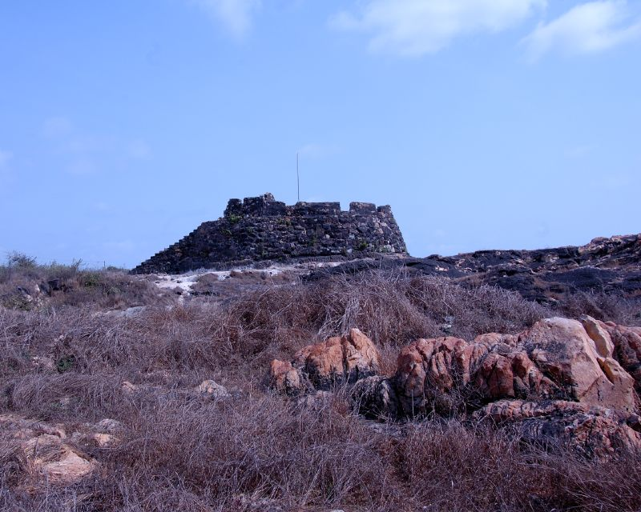
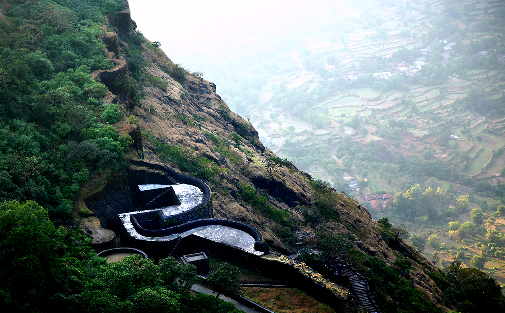

रयतेचे राजे, भारतीय आरमाराचे पितामह, गनिमी काव्याचे जनक आणि जगातील अद्वितीय लोककल्याणकारी हिंदवी स्वराज्याचे अलौकिक युगपुरुष.

१७ व्या शतकातील शिवकालीन अस्सल चित्र (ब्रिटिश म्युझियम लंडन संग्रह). तीक्ष्ण नजर, आत्मविश्वास आणि अलौकिक तेज प्रतिबिंबित करणारे महाराजांचे खरे रूप.




१९ फेब्रुवारी १६३० रोजी सह्याद्रीच्या जुन्नर येथील अभेद्य किल्ले शिवनेरीवर छत्रपती शिवाजी महाराजांचा जन्म झाला. वडील शहाजीराजे भोसले हे तत्कालीन दख्खनचे सर्वश्रेष्ठ सेनापती व मुत्सद्दी होते, तर आई राजमाता राष्ट्रमाता जिजाऊसाहेब या लखुजीराव जाधवांच्या कन्या व प्रखर धर्मनिष्ठ, स्वाभिमानी विरांगना होत्या.
जिजाऊंनी बाल शिवबांना रामायण, महाभारत, गीतेतील अन्यायाविरुद्ध लढण्याचे धडे दिले. रयतेवर होणारे परकीय सुलतानशाह्यांचे अत्याचार पाहून जिजाऊंनी शिवबांच्या मनात परकीय गुलामगिरी नष्ट करून स्वतःचे 'हिंदवी स्वराज्य' स्थापन करण्याची प्रखर ज्योत पेटवली.
२६ एप्रिल १६४५ रोजी अवघ्या १५ वर्षांच्या शिवरायांनी भोर जवळील किल्ले रायरेश्वराच्या महादेवाच्या साक्षीने आपल्या मावळ्यांसमवेत स्वतःच्या हाताचे बोट कापून महादेवाच्या पिंडीवर रक्ताभिषेक केला आणि प्रतिज्ञा घेतली: "हे राज्य व्हावे, हे तो श्रींचे मनोगत!"
त्यानंतर लगेचच शिवरायांनी आदिलशाहीच्या ताब्यातील अभेद्य तोरणा किल्ला (प्रचंडगड) जिंकून स्वराज्याचे तोरण बांधले. तोरण्यावर सापडलेल्या गुप्त धनातून शिवरायांनी शेजारीच मुरुंबदेवाच्या डोंगरावर 'किल्ले राजगड' ची पायाभरणी केली, जो पुढील २५ वर्षे स्वराज्याची राजधानी राहिला.
६ जून १६७४ रोजी राज्याभिषेकानंतर शिवरायांनी स्थापन केलेली जगातील पहिली सुव्यवस्थित लोकशाहीवादी मंत्रीमंडळ व्यवस्था:
| क्र. | पद (Post) | शिवकालीन मंत्री | खाते व प्रशासकीय अधिकार (Portfolio & Powers) | वार्षिक वेतन (होन) |
|---|---|---|---|---|
| १ | प्रधान (पंतप्रधान / पेशवे) | मोरो त्रिंबक पिंगळे | सर्व प्रशासनाचे प्रमुख, राजांच्या अनुपस्थितीत राज्यकारभार, सैन्याचे नेतृत्व, कागदपत्रांवर सही व शिक्के. | १५,००० होन |
| २ | अमात्य (अर्थमंत्री) | रामचंद्र नीलकंठ (अमात्य) | राज्याचा सर्व जमा-खर्च, महसूल तपासणी, अर्थसंकल्प व्यवस्थापन व 'आज्ञापत्र' चे रचनाकार. | १२,००० होन |
| ३ | सचिव (गृह व पत्रव्यवहार मंत्री) | अण्णाजी दत्तो | राजकीय हुकूम, फर्मान व सनदांची तपासणी, जमीन महसूल मोजणी ('शिवशाही काठी'). | १०,००० होन |
| ४ | मंत्री (वाकनीस / अंतर्गत सुरक्षा) | दत्ताजी त्रिंबक वाकनीस | राजांची वैयक्तिक सुरक्षा, अंतर्गत गुप्तहेर यंत्रणा, दरबारी रोजकीर्द व दैनंदिन कामकाज नोंदी. | १०,००० होन |
| ५ | सेनापती (सरनोबत) | हंबीरराव मोहिते | संपूर्ण घोडदळ व पायदळाचे सर्वोच्च प्रमुख, युद्ध मोहिमांची आखणी व सैन्याची भरती-शिस्त. | १०,००० होन |
| ६ | सुमंत (डबीर / परराष्ट्रमंत्री) | रामचंद्र त्रिंबक डबीर | परकीय सत्तांशी (मुघल, कुतुबशाही, आदिलशाही, इंग्रज) मुत्सद्देगिरी, वकील नेमणे व तह करणे. | १०,००० होन |
| ७ | न्यायाधीश (सरन्यायाधीश) | निराजी रावजी | राज्यातील सर्व दिवाणी व फौजदारी खटल्यांचे न्यायदान, कायदे अमलबजावणी व प्रजेला निःपक्ष न्याय. | १०,००० होन |
| ८ | पंडितराव (धर्माध्यक्ष / शिक्षणमंत्री) | रघुनाथ पंडित (राव) | धार्मिक विधी, विद्वान पंडितांचा सन्मान, दानधर्म, नीतिनियम व सामाजिक आचारसंहिता. | १०,००० होन |
शिवरायांचा नियम होता: बहिर्जी नाईकांची १००% खात्री पटल्याशिवाय सैन्य कधीही मोहिमेवर निघत नसे. शत्रूच्या सैन्याची संख्या, रसद कोठारे, गुप्त मार्ग आणि पहारेकऱ्यांच्या वेळा या सर्व गोष्टींचे नकाशे अगोदरच तयार असत.
शून्य त्रुटी गुप्तहेर जाळेबहिर्जी नाईक एका क्षणात बैरागी, व्यापारी, फकीर, गारुडी किंवा पाथरवट बनत असत. त्यांच्या हाताखाली ३,००० हून अधिक हेर संपूर्ण भारतभर मुघल, कुतुबशाही व आदिलशाही दरबारात कार्यरत होते.
३,०००+ सक्रिय गुप्तहेररात्रीच्या वेळी जंगलातून संदेश पाठवण्यासाठी बहिर्जींचे हेर घुबड, रातकिडे, कोल्हा व विविध पक्ष्यांच्या आवाजात सांकेतिक शिट्ट्या वाजवत असत. शत्रूला याचा लवलेशही लागत नसे.
सांकेतिक गुप्त लिपीशाहिस्तेखानाच्या लाल महालातील प्रत्येक दालनाचा नकाशा आणि १६६४ च्या सुरत मोहिमेतील मुघल खजिन्यांची खडान् खडा माहिती बहिर्जी नाईकांनीच शिवरायांना आणून दिली होती.
सुरत व लाल महाल मोहीम"गडावर आधी उदक (पाणी) पाहावे. गडावर किमान वर्ष-दोन वर्षे पुरेल इतका पाणीसाठा टाके खणून करावा. पाणी आहे म्हणून निर्धास्त न राहता दुसरे टाके खणावे."
"गडाभोवतालची झाडे ही नैसर्गिक तटबंदी आहे. ती तोडू नयेत. तोफखान्याच्या आडून झाडांचे संरक्षण करावे."
शत्रूचे हत्ती दरवाजा फोडू नयेत म्हणून गडांचे दरवाजे दोन बुरुजांच्या वळणात लपवून (गोमुखी) बांधले जाई, ज्यामुळे हत्तींना धावून धडक मारण्यास जागा उरत नसे.